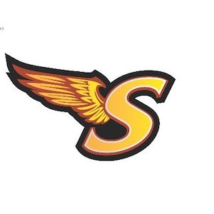

About Adam
Early Days
My time at Sharon High School not only allowed me to excel academically and athletically but also provided me with a sense of belonging to a supportive and tight-knit community. Playing for the soccer team throughout my four years there wasn't just about winning games; it was about building lasting friendships and learning valuable life skills through teamwork, dedication, and perseverance. The memories of those high school years, both on and off the soccer field, continue to be a cherished part of my journey and have left an indelible mark on my character and values. The experience of playing the team instilled in me a deep appreciation for discipline and commitment, qualities that have since influenced my approach to various aspects of life. Those four years taught me not only about the sport itself but also about the importance of resilience in the face of challenges and the power of camaraderie. Even as time has passed, the friendships formed during my high school years in Massachusetts remain some of my closest and most cherished connections.
Soccer Player
When I moved to Massachusetts, I was introduced to a club by the name of New England Football Club to which I soon joined. None of my close friends I had met played on this club but I needed more of a challenge. For the next decade of my life I dedicated nonstop months of my life for the sport. Soccer just allows me to enter a different headspace where I can forget about all my other problems and just focus on the game I love. Now at RIT, I am fortunate enough to be given the oppurtunity to play for the first team. I even scored my first collegiate goal the other week!
Student
I attended Sharon Public Schools since I was around ten years old and never looked back. Sharon has been nothing but good for setting me up for success in college. Known to be a town solely focused on academics, everyone strives to be the best version of themselves through the schools resources. I am immensely grateful for the educational foundation I received in Sharon, which not only prepared me academically but also instilled in me a strong work ethic, a commitment to self-improvement, and a sense of community. As I ventured into college and later into the wider world, I carried with me the lessons and values imparted by Sharon Public Schools, knowing that they would continue to guide me toward achieving my goals and aspirations.